Politix
Political Campaign WordPress Theme
- by: CWSThemes
- email: support@cwsthemes.com
Getting Started
Hello and welcome to the Politix user guide. This guide covers all the needed information for building an amazing website, as well as some helpful tips and tricks that will make your experience working with the Politix theme easier and more enjoyable. If you need any additional assistance while using our theme, you can always contact us via email and our support team will be glad to help you out.
In this first section we will go through the essential steps required to start building your website with the Politix theme. We will explain how to install the theme, import the included demo content, as well as how to update the theme.
Installing Politix
After downloading the Politix installation file from ThemeForest, extract it and in the extracted folder locate the politixs.zip file. You can then install the Politix theme using one of the two following installation methods:
-
WordPress upload - For most users, this is probably the simplest installation method.
To install the Politix theme using this method, please follow these steps:- Login to your WordPress admin panel
- Navigate to Appearance > Themes > Add New > Upload Theme
- Click on Choose File and select politixs.zip
- Click on Install Now
-
FTP upload - If you would like to install the Politix theme via FTP, please follow these steps:
- Extract the politixs.zip file you previously located. You should now see a folder named politixs
- Using an FTP client, login to the server where your WordPress website is hosted
- Using an FTP client, navigate to the /wp-content/themes/ directory under your WordPress website's root directory
- Using an FTP client, upload the previously extracted politixs folder to the themes directory on your remote server
Once the installation is complete, your Politix theme will be ready for use. Now all you need to do is navigate to Appearance > Themes and activate the Politix theme. After you have done this, you should see Theme Options appear in the left navigation bar of your WordPress admin panel.
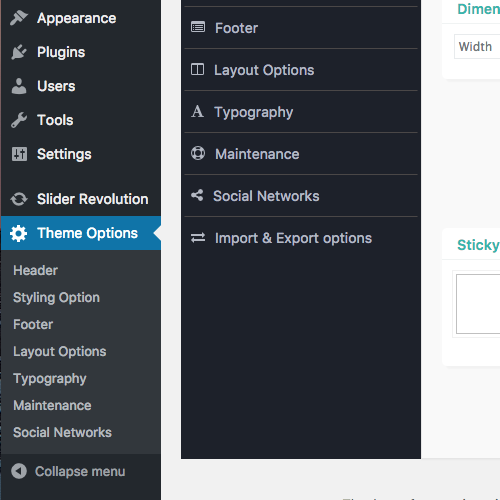
You should also see a notification at the top of the screen that required plugins need to be installed. Please install and activate all of the required plugins, since they are necessary for the theme to function properly.
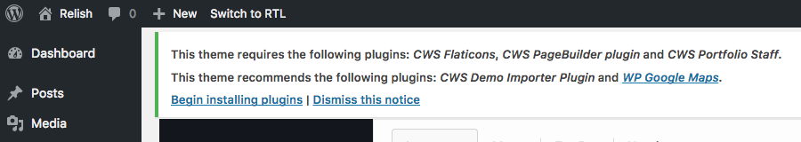
Importing Demo Content
With the Politix theme, you have the option to either start creating your site from scratch, or choosing to import the included demo content to use as a starting point, and then modifying it according to your needs. In this section we will explain how to do this.
Politix comes with a one-click import plugin. To import the demo content please follow these steps:
- Login to your WordPress admin panel
-
Open Theme Optioins > Help & Maintenance tab and insert your Item Purchase Code into the respective field here:
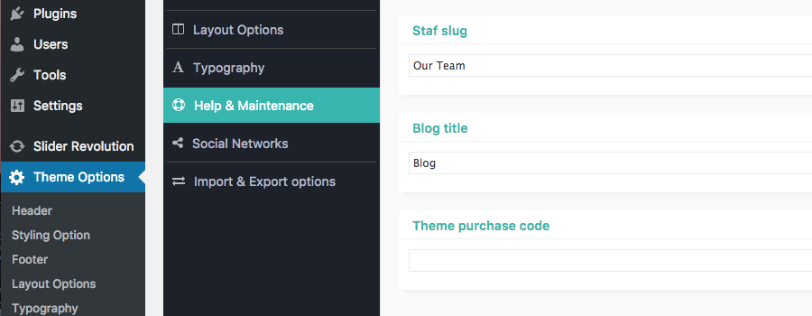
-
Save the changes and navigate to Tools > Import Section. Pick CWS Demo Importer plugin and click Run Importer
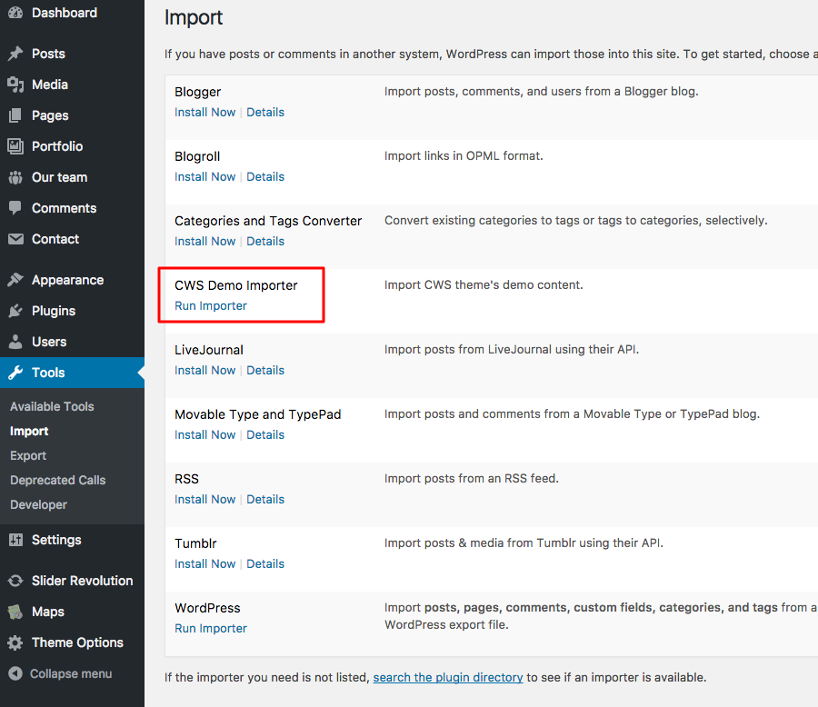
-
CWS Demo Importer will allow you import the needed part of the content as well as the whole content:
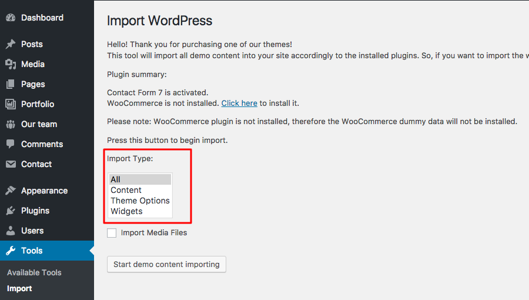
-
From the Import Type section, choose what type of content you'd like to import:
- All - imports pages, content, widgets, and settings. We recommend this for users who would like reflect their site exactly as it appears on our live demo.
- Content - imports only pages and their content. This option is recommended for users who would like to see how we've created our page layouts, but who want to keep their own settings in Theme Options.
- Widgets - imports only widgets. This option is recommended for users who would only like to populate the theme’s widget areas with the widgets from their chosen demo. No other content is imported.
- Options - imports settings into Theme Options only. This option is recommended for users who would like to achieve the same look and feel of their chosen demo site, but do not want to import any additional content.
-
If you also wish to import media files (images, videos, sounds), make sure to set the Import Media Filesoption to "Yes". In this case you must agree to the copyrights notice.
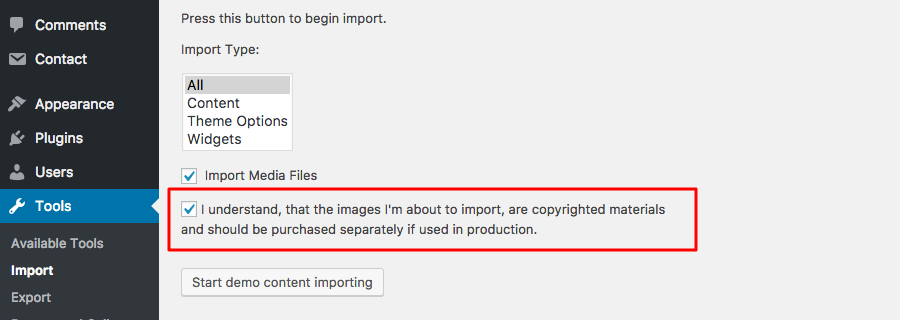
-
Click on the Start demo content importing button and wait for the import process to finish.
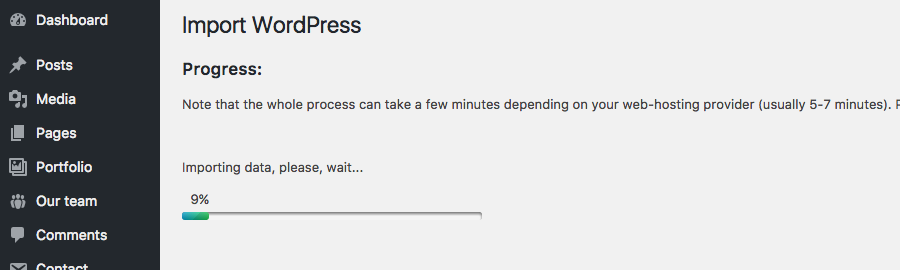
Please note, if the above screenshot looks different at your side, you should check http or https settings of your WordPress instance to match your website's URL: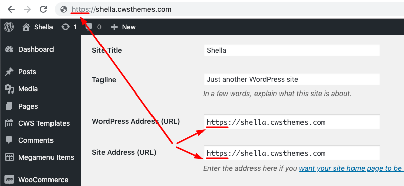
-
Final step is to import Revolution Slider's demo content:
- Navigate to Slider Revolution > Import Slider
- Click on Choose File button and locate the Demo > Sliders folder, wher you will find dummy files
- Click on Import Slider button
- As as result, you should see imported sliders.
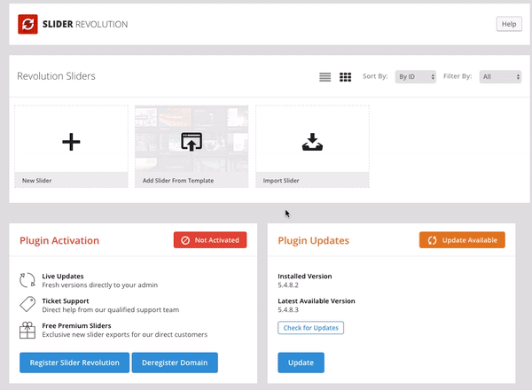
Updating Politix
Automatic updates will help you update your theme within one single click. To activate this awesome option you should insert your Item Purchase Code into the respective field here (in case you've not inserted it earlier before running the demo import tool ):
Having this done, the automatic updates will be activated and you will be notified when a new update is available:
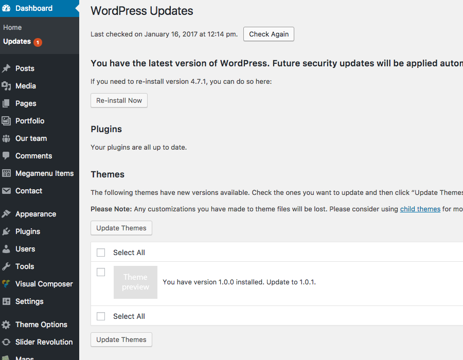
You can update your theme manually as well by performing the following steps:
- Download the latest theme .zip file from ThemeForest
- Extract it and locate politixs.zip
- Extract politixs.zip and locate the politixs folder
- Copy/Replace the contents of the politixs folder to the /wp-content/themes/politixs folder of your web site.
Troubleshooting FAQ
1. Why do I see a white screen when importing demo content?
If you get a white screen or some other error when trying to import our demo content, this probably happens because of the maximum execution time limit. You need to increase the maximum execution time (upload time) setting of your web server. The default maximum execution time on web servers is 30 seconds. Please increase it to 120 seconds. Possible ways of achieving this are:
- By Wp-config.php changes - set_time_limit(120);
- In htaccess - php_value max_execution_time 120;
- In php.ini file - max_execution_time = 120
Ask your hosting provider to take care of this for you.
2. How do I optimize my site?
Please use this tool to investigate reasons for slow loading: https://developers.google.com/speed/pagespeed/insights/?hl=en
GoDaddy has a nice article about this: http://bit.ly/2cYs9Tc
3. How to translate or rename default theme labels?
You can use the LocoTranslate plugin (http://poedit.net/wordpress) to translate/rename all the theme's labels.
Using Politix
Once Politix is installed, you can start building your website. This section will explain how you can set up your header, upload your logo, create your menu, set up your footer area, customize the general look and feel of your website, and create your first pages.
Setting Up the Header
One of the first things you might want to do after you have installed and activated your Politix theme is to set up your header area. The header contains the logo, menu, search bar and other optional widgets.
We recommend using Customizer, which is fully supported by our themes. To set up your header, navigate to Appearance > Customize from your WordPress admin panel. The settings you define here will be the default settings for all pages on your site. If you need any help in further understanding any of these options, please refer to the Theme Options section of this guide.
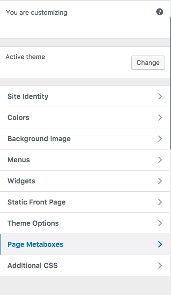
Some options, such as the font color, opacity, spacings and background color, can be overridden on a page to page basis from a specific page’s backend. For more information on how local page settings work, please refer to the Pages section of this guide.
Uploading Your Logo
To add your logo to the header, navigate to Appearance -> Customize -> Theme Options -> Header -> Logo from your WordPress admin panel and click the select button next to the Logotype field. After you upload your image and save the options, you should have a visible logo in your header area. For more information regarding the various logo types that can be uploaded, please refer to the Theme Options section of this guide.
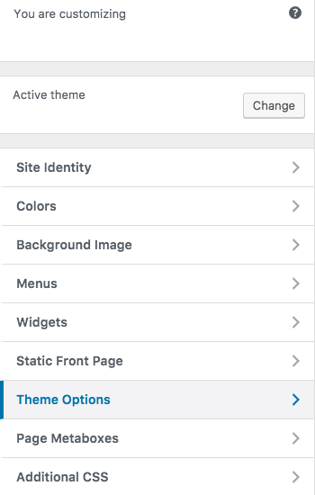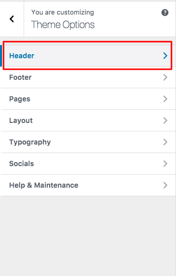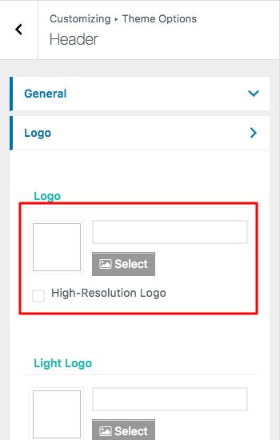
Menu Creation
To create a new menu, navigate to Appearance -> Menus from your WordPress admin panel and click on Add a Menu. Enter a name for your new menu and then click Create Menu.
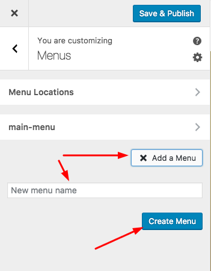
Every page that you have created will be listed in the section on the right. Simply click the pages that you would like to add to your menu and they will be added. Once you have added pages to your menu, you can click and drag the menu items to rearrange them, or nest them one underneath the other.
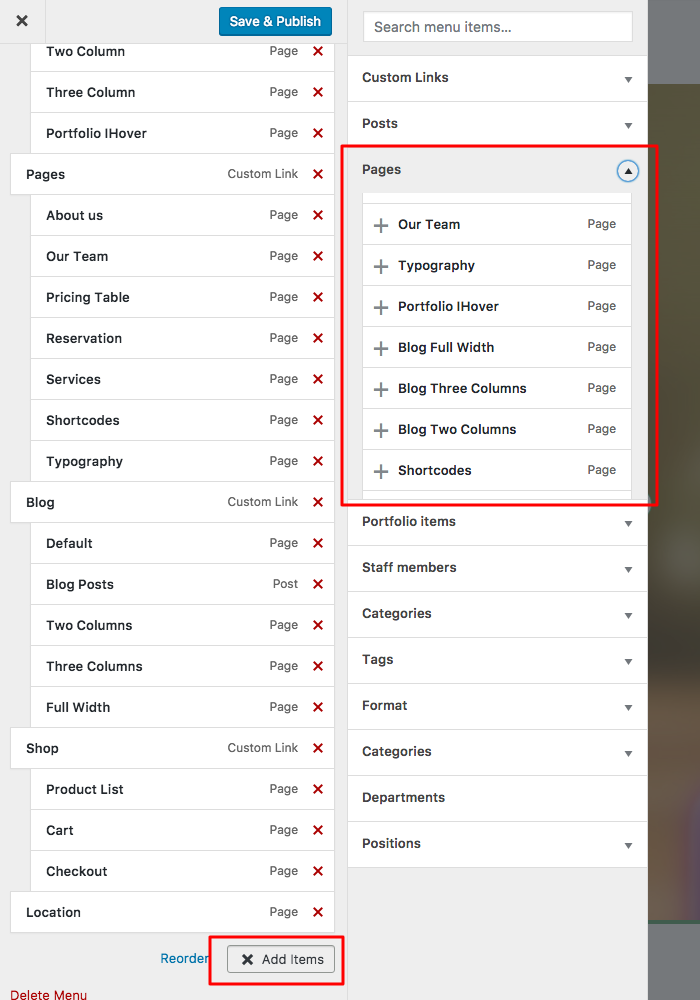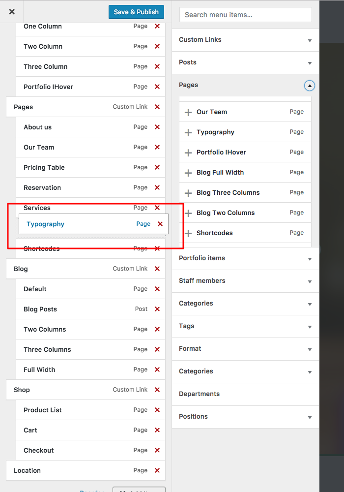
In the Menu Locations section (which is located underneath the Menu Structure section), check the checkbox next to Navigation Menu. This will activate the menu you have just created, and you should now see a functional menu in your header.
Footer
To set up your footer, navigate to Appearance -> Customize -> Theme Options -> Footer from your WordPress admin panel.
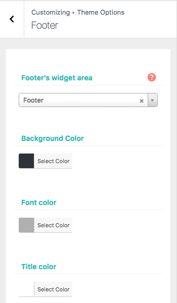
The settings you define here will be the default settings for all pages on your site. This can be overridden on a page to page basis from a specific page’s backend as well. If you would like both the top and copyrights footer areas to be displayed, make sure that Footer Sidebar contains a sidebar area which is not empty and Footer Copyrights Content input filed is not empty. If you need any help understanding any of these options, please refer to the Theme Options section of this guide.
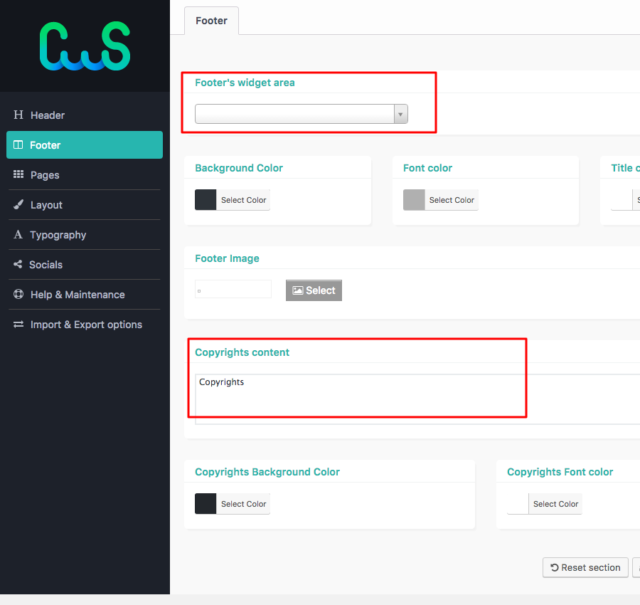
Content is added to your footer via widgets. So first, you should generate and name the needed footer area. Navigate to Theme Options -> Pages -> Sidebars from your WordPress admin panel. Click Add new sidebar button and give it a name. Save changes and navigate to Appearance -> Customize -> Widgets. You will see the generated widget areas for your footer. On the right side of the Customizer panel you will see the available widgets when click Add a Widget button. To add a widget to the active widget areas, simply click the desired widget on the right.
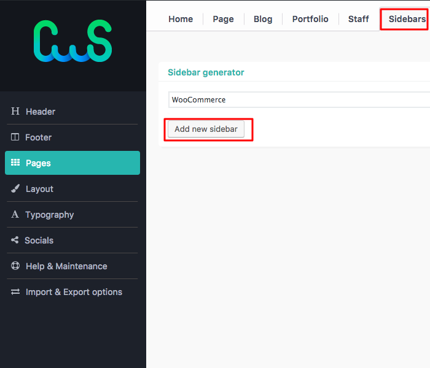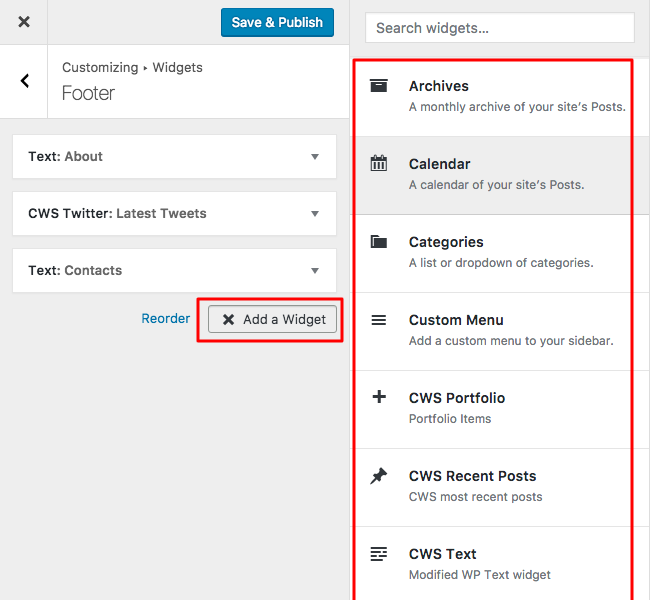
To add content to the copyrights area, simply type in your copyrights text at Appearance -> Customize -> Theme Options -> Footer.
The theme allows you customize your footer to make it unique and eye catching. With the help of Customizer you can add a footer background image or pattern, override background or font color add a copyrights notice.
General Look and Feel
Now let’s set up the general look and feel of your site. If you have imported a demo site and would like to keep its general look and feel, then you do not need to do anything else. Otherwise, go to Appearance -> Customize ->Theme Options -> Styling and in the Main Color and Helper Color fields set default main colors for your site. Next, navigate to Appearance -> Customize ->Theme Options -> Typography and set the needed fonts, sizes, font colors for your site.
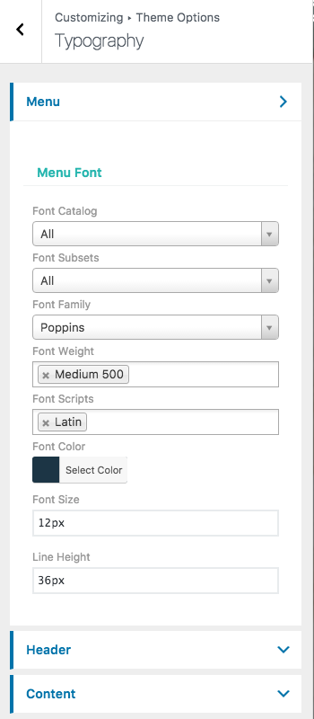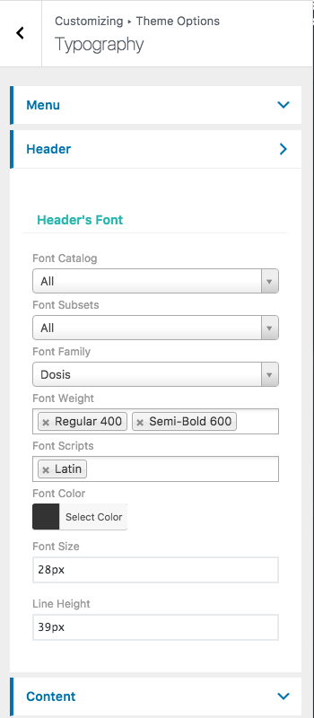
Now that you have set up the basic elements for your site, you’re ready to start building your pages.
Building Pages
To create a new page, navigate to Pages > Add New from your WordPress admin panel. In the text field near the top of the screen enter a title for your page. After you have added a title, choose the layout type from the section on the bottom named Sidebar Position. This will allow you to add sidebars to your page.
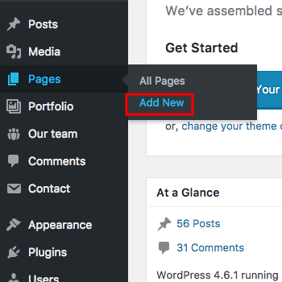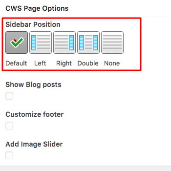
In the bottom section of your screen you will find local page settings. Any settings that you define here will override the global settings set in Theme Options.
To start adding elements to your page, first make sure that you are in the backend editor view. If the blue button near the top left of the page says BACKEND EDITOR, click on it to enable the Visual Composer page builder view. Once you’re in the Visual Composer view, the blue button will say CLASSIC MODE. You can now click on the Add Element button to start adding elements to your page.
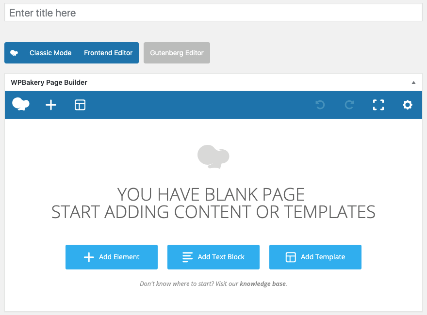
Finally, click the Publish button in the upper right section of the page. (If you made some changes on an already published page, you will see an Update button instead).
Pages
In this section we will discuss a page creation in details, including various templates and specific options.
When creating a new page, one of the first things you would probably want to do is to choose an appropriate template for your page. To achieve this, visit your page from the backend (or create a new page by going to Pages > Add new), and locate the CWS Page Options section on the bottom of the page content. Politix comes with a variety of page templates to choose from:
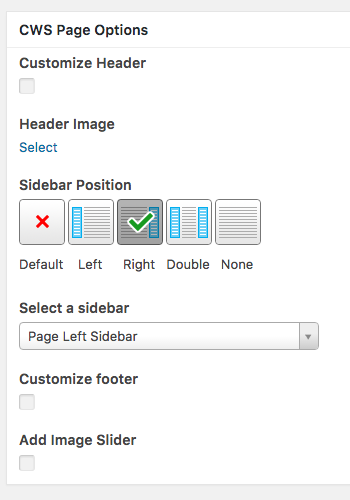
Customize Header - select this option to customize your header area of the current page.
- Header Covers Slider - select this option to create a transparent menu type.
- Override Font Color - select this option to assign a new color to your menu items for the current page only.
- Logo - this option will help you hide or assign the needed logo.
- Header Opacity - set the needed opacity value here which will make the menu background color transparent. This option is useful when the Header Covers Slider options is on. Available values are from 0 to 100
Header Image - this option will a header image to the current page.
Sidebar Position
- Default - select this option if you would like to apply the default sidebar position which was set via Theme Options panel.
- Left or Right - will add the respective sidebar to the page you're editing or creating.
- Double - will add left and right sidebars to your page.
- None - will apply a full-width layout to your page ignoring sidebars.
Now that you have chosen an appropriate template, let’s go over the custom fields available for pages.
Customize Footer - select this option to assign a footer area for the current page.
- Sidebar Area - select the needed sidebar area and it's widgets will be populated in the footer.
Add Image Slider - select this option to add an image slider to the page. It's very useful for multilingual websites. Each homepage can contain its own translated image slider.
- Slider Shortcode - insert your slider's shortcode into this field in order to display it on the current page.
Blog
In this section we will discuss the creation of blog posts and all the available options for each post, setting up pages to display blog listings, as well as how to change the date format for your posts.
Blog Posts
To create a new blog post, go to Posts > Add New from your WordPress admin panel. First, you need to enter a title for your blog post in the text field near the top of the screen. Then choose a format for your blog post in the Format section on the right side of the screen.
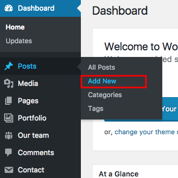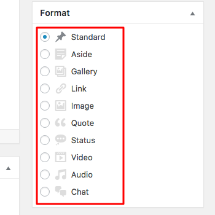
Let's take a look at the available blog post formats:
-
Standard or Image - This is the default blog format. You can start adding content.
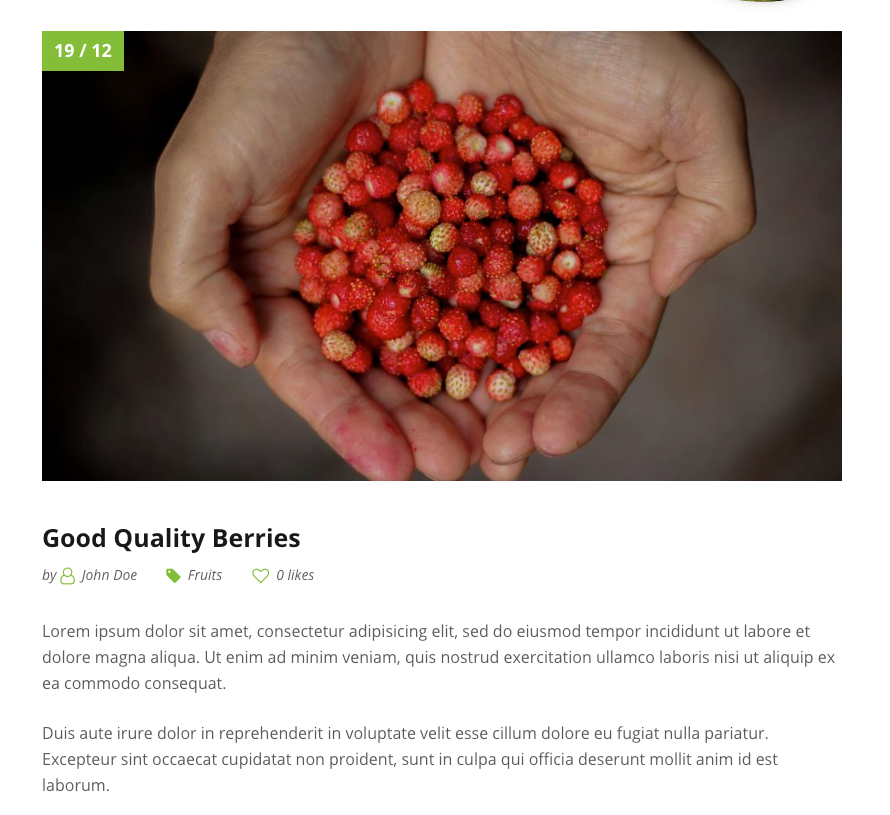
-
Gallery - this format features an image gallery slider. In order to make it work, you need to add a gallery at the bottom of your page. A field named Gallery will appear at the bottom section of the page, and here you can upload and add your gallery images.
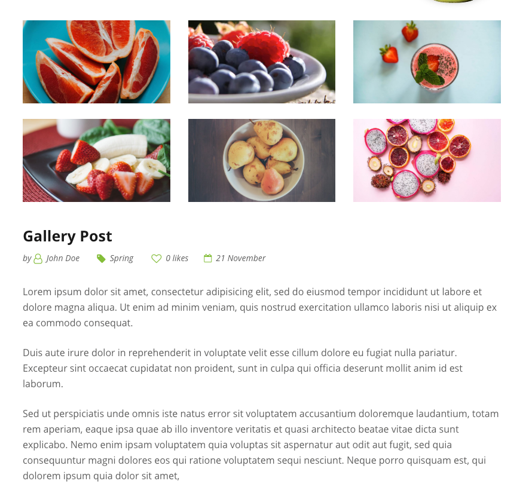
-
Link - a field named URL will appear at the bottom section of the page. Here you can enter the full URL of the page you would like to link to.
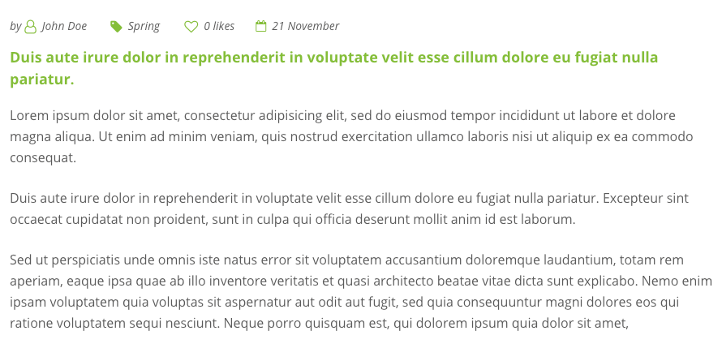
-
Quote - a field named Quote and Author will appear at the bottom section of the page. Here you can enter the quote you would like to display and its author.
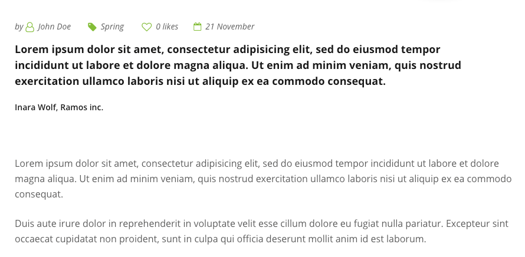
-
Video - a field named Video will appear in the bottom section of the page. Here you can enter your video links. You can link videos from YouTube or Vimeo, or alternatively, host your own videos. If you decide to self-host your video files, you need to upload the video files via the Media section, and then enter the path to your video files in the corresponding fields. We recommend uploading videos in all three formats (WEBM, MP4, and OGV) in order to ensure compatibility with all modern browsers.
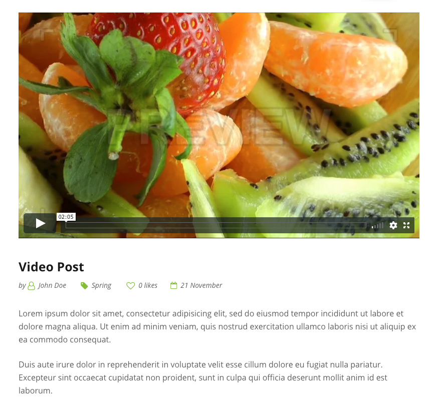
-
Audio - a field named Audio will appear in the bottom section of the page. Here you can enter the path to an audio file you have previously uploaded to the Media Library or past the SoundCloud url.
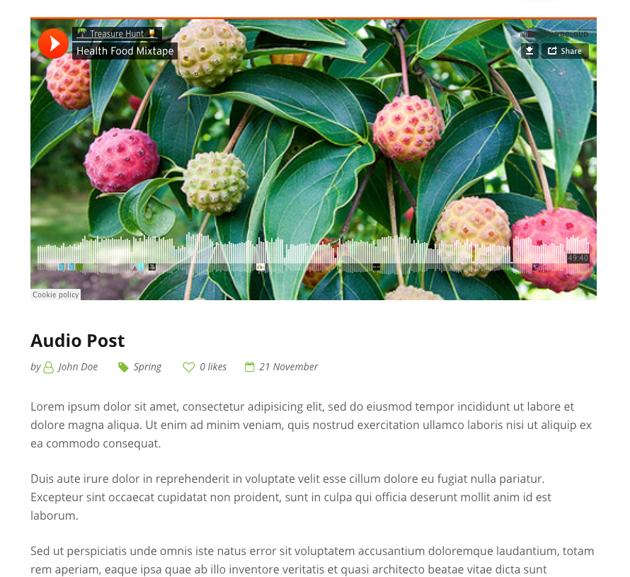
Now let's categorize this post:
- Beneath the Format section you will see a section named Categories. Here you can select the categories that you would like to add this post to. If you would like to create a new category, click on the + Add New Category link. A text field will appear in which you can enter a category name, and then click Add New Category.
-
Once you've selected the categories you would like to add your post to, click the Publish button.
Congratulations, you've just published your first blog post! - Beneath the Categories section you will see the Tags and Featured Image sections. Here you can add tags to your post, and set a featured image which will be displayed for this post on blog list pages.
Now that we have published our first blog post, let’s go over the available custom fields for blog posts.
CWS Post Options
- Enable Lightbox - check this option to enable opening image in a lightbox.
- Author Info - check this option to display the author info box on blog single posts.
Blog Lists
After you have created enough posts, you need to create a blog list where all of the posts will be populated. To create a blog list, you first need to create a new page and add the CWS Blog module. Customize the output with the following options:
- Default - select this option if you would like to apply the default blog layout which was set via Theme Options panel.
- Large - select this option to display blog list with large images.
- Medium - select this option to display blog list with medium images.
- Small - select this option to display blog list with small images.
- Two - select this option to display Masonry blog layout with two columns.
- Three - select this option to display Masonry blog layout with tree columns.
-
Category - choose a category of posts to display. It allows multiple categories to be selected.
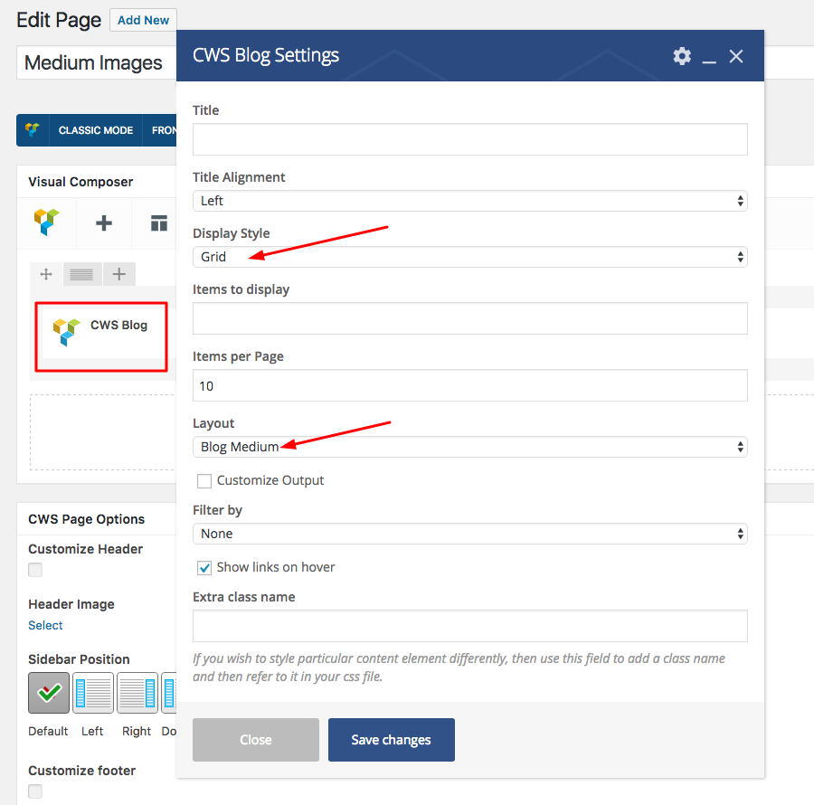
By choosing one of the above options you will have set this page to automatically show a list of your blog posts in a needed format. All you need to do now is publish the page.
Date Format
If you wish to change the date format on blog posts, navigate to Settings > General > Date Format from your WordPress admin, and select your format of choice.
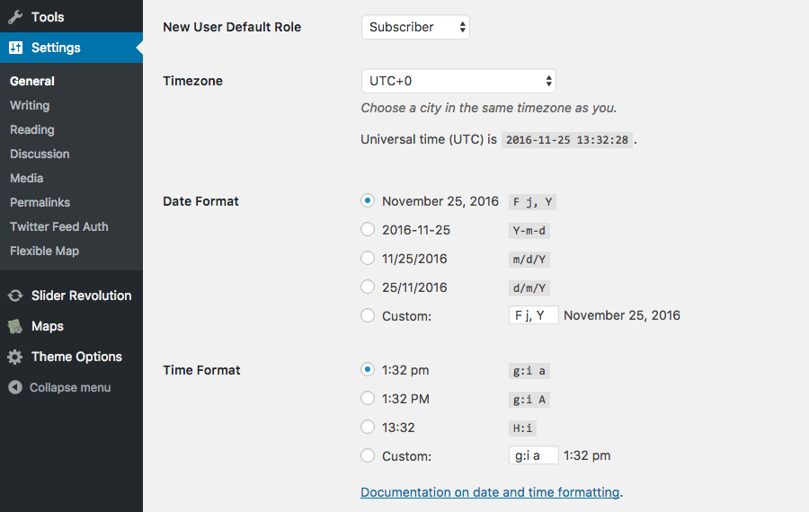
Portfolio
In this section we will discuss how to create portfolio items, as well as how to add portfolio lists to your pages.
Portfolio Items
To create a new portfolio item:
-
Navigate to Portfolio > Add Portfolio Item from your WordPress admin panel.
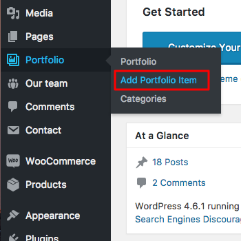
- Enter a title for your portfolio item in the text field near the top of the page.
- On the right side of the screen you will see a section named Categories. Here you can select the categories that you would like to add this portfolio item to. If you would like to create a new category, click on the + Add New Category link. A text field will appear in which you can enter a category name, and then click Add New Category.
- Once you have checked the categories you would like to add your post to, click the Publish button.
Beneath the Categories section is a Featured Image section. In the Featured Image section, you can set an image to be displayed for this item on portfolio lists.
Now that you have set up your first portfolio item, let’s go over the available custom fields for portfolio items.
CWS Portfolio Options
-
Show Related Items - check this option to display related posts on portfolio single pages.
- Title - give the related items section a name.
- Columns - select the needed column grid to populate the related posts.
- Number of Items to Show - set this option to show the needed number of related posts. A carousel of related posts will be populated automatically when the number of related posts will be more than the selected Columns.
-
Enable Hover Effect (FancyBox) - check this option to enable hover animation on mouse over.
- Add Custom URL - insert an external url into this field if you wish to open an external page, not the portfolio single page.
- Open in a Popup Window (FancyBox) - check this option to enable opening image/url in a fancybox.
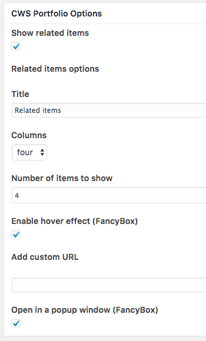
Portfolio Lists
A portfolio list populates a listing of your portfolio items, each of which can be clicked on for a detailed overview of the single portfolio item.
Portfolio lists are added to pages via Visual Composer, the CWS Posts Grid module. To add a portfolio list to a page, navigate to the backend of the needed page and add the CWS Posts Grid module to the page via Visual Composer.
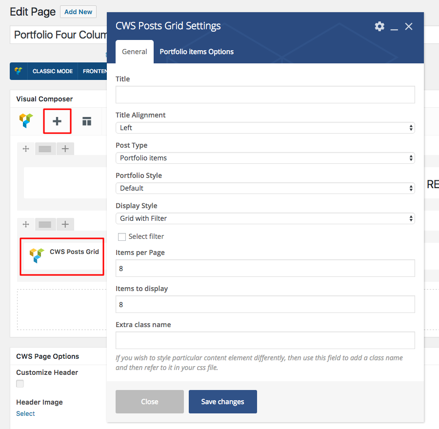
Theme Options
This section provides a comprehenisve overview of all the settings available in the Theme Options part of your WordPress admin panel. The settings found here are applied globally and will affect all pages on your website. However, many of these options can be overridden locally by applying settings on individual pages or on shortcode elements.
Header
Logo
- Dark Logo - upload a default dark logo for your website.
- Light Logo - upload a default light logo for your website.
- High-Resolution Logo - check this option to generate the retina logo, your default logo will be reduced by size twice.
- Dimensions - you can set the dimensions of the logo image by setting the desired dimensions
- Position - this option will set the desired logo position: left, right, center or inside the menu.
- Spacings - use this option to control spacings around your logo.
- Sticky Logo - use this option to apply a new logo to your sticky menu. The main logo will be used if you leave this field empty.
-
Mobile Logo - use this option to apply a new logo to your mobile menu. The main logo will be used if you leave this field empty.
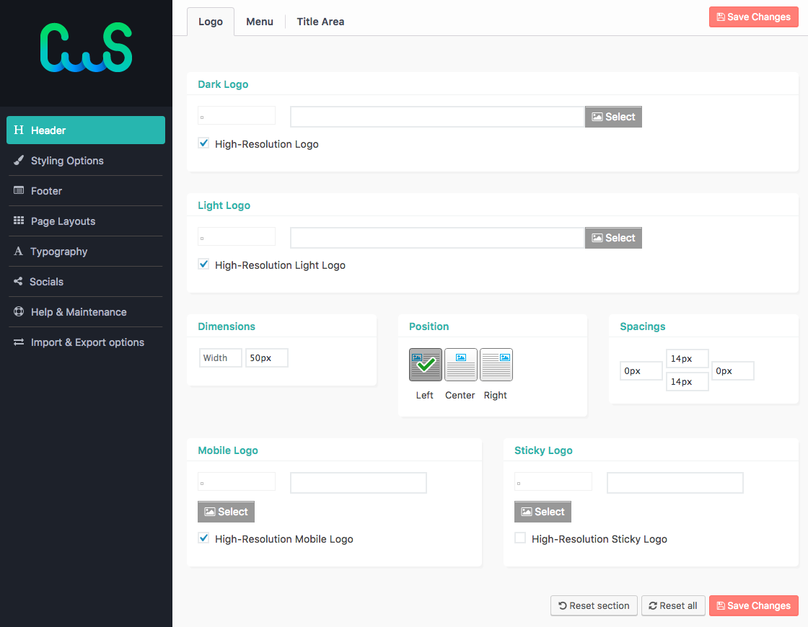
Menu
- Position - this option will set the desired menu position: left, right or center.
- Opacity - this option will set the menu transparency level or hide it at all when set to zero.
- Background Color - set this option to customize the background color of your menu area.
- Override Font Color - this option will override the default font color, which is set at the Typography section of this guide and will be applied only on those pages, where header hovers a slider or an image. It will not be applied to page archives or other pages which don't support this option.
- Disable Full-Width Menu - select this option to disable the full-width menu type.
- Menu And Logo Overlays Title Area And Homepage Slider - this option will force the header (which contains the menu and logo) overlay the slider or a title area. It's very useful for creating pages with transparent headers.
-
Apply Sticky Menu - turn this switcher on to populate a sticky menu.
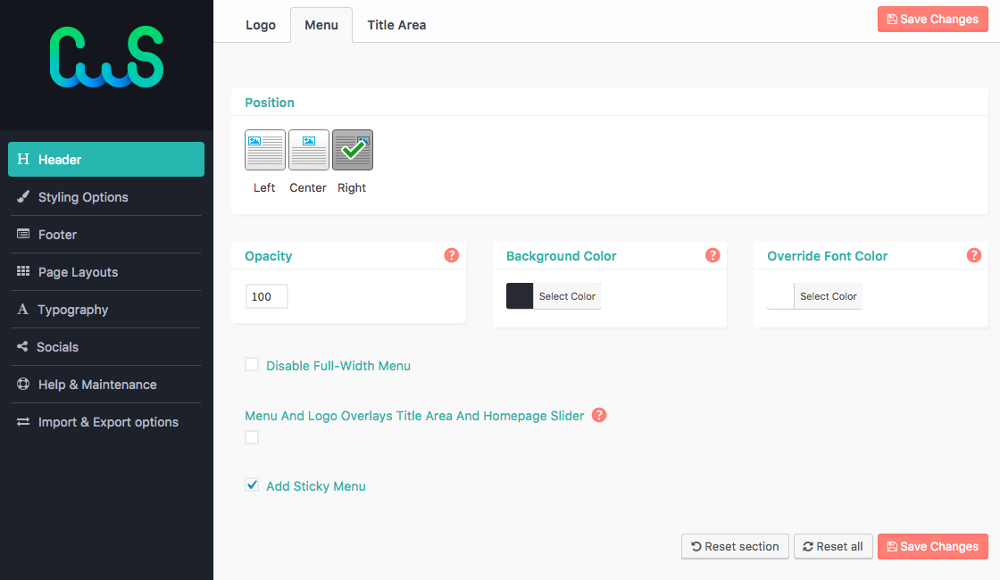
Title Area
- Title Spacings - this option will add top and bottom spacings to your titles and breadcrumbs area. It's very useful when an image is being used in your headers.
- Background Image - set an image for your page headers.
- Background Color - add a color to your title area.
-
Font Color - set this option to customize the font color of your page titles.
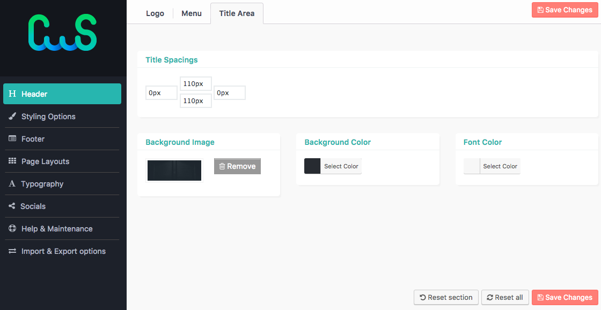
Styling Options
Styling Options
- Main Color - set the main color of your website.
- Secondary Color - set the secondary color of your website.
- Helper Color - set the helper color of your website.
- Apply Boxed Layout - turn this option on to enable the boxed layout. If you choose a boxed layout for your site, the content will be fitted in a centrally positioned grid.
-
Background Settings - will help you add a background image and color for the boxed mode. The background will be shown on the left and right sides of your content area.
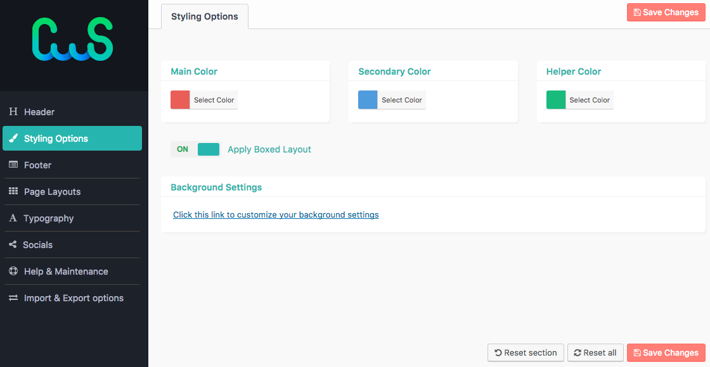
Footer
- Background Color - set the needed footer background color with this option.
- Font Color - set the needed content color for your footer area.
- Title Color - set the needed title color for your footer area.
- Footer Image - upload a background image here.
- Footer's Sidebar - choose a custom widget area which widgets will be populated in the footer area of your website.
- Copyrights Content - this text area will add text content to your footer copyrights area.
- Copyrights Background Color - set the needed footer background color (copyrights section) with this option.
-
Copyrights Font Color - set the needed content color (copyrights section) for your footer area.
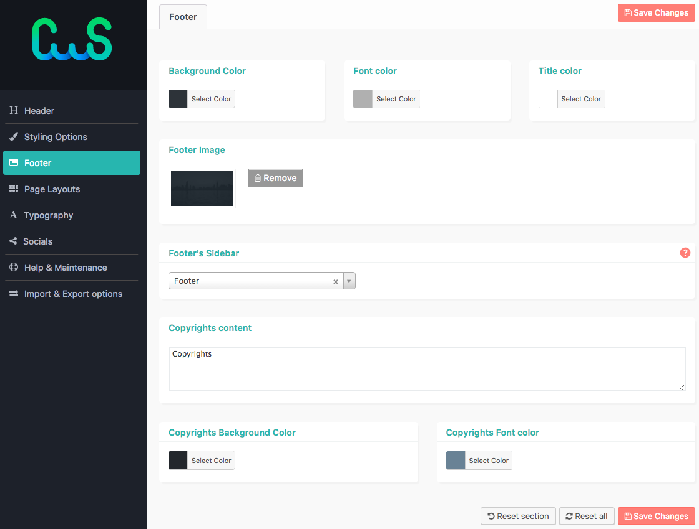
Page Layouts
Home
-
Slider - set this option to customize the slider's area on your homepage.
- None - don't use slider on this page.
- Image Slider - if you wish to have a slider on the top of your page, select this option and copy and paste the slider's shortcode into the Slider Shortcode field.
-
Video Slider - this option will add a video movie to your homepage.
- Slider - will add a slider over your movie. This option is useful when you wish to add some slogans over your movie and slide them, while the movie is playing on the background.
- Set Video Height - will set the height of your movie.
-
Video Type - select this option to apply the needed video type: youtube, vimeo or self-hosted video sources are supported.
- Self-Hosted - use this option to upload your own video movie.
- YouTube - set the YouTube movie ID in order to display the video. Ex.: Scxs7L0vhZ4
- Vimeo - past your full Vimeo embedd url in order to display the video. Ex.: https://player.vimeo.com/video/114799250
- Overlay Type - select this option to add overlya color or gradient over your movie.
- Use Pattern Image - will add a pattern image to your vide and overlay it.
-
HomePage Sidebar Layout - choose the desired layout for your homepage. You can also disable the sidebar here by choosing "None".
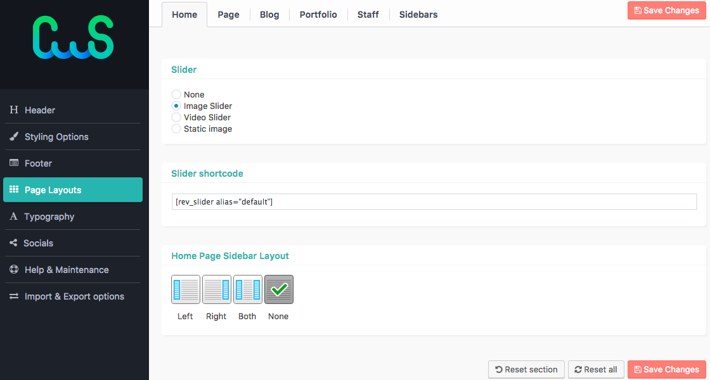
Page
Page Sidebar Layout - this option will help you select the needed default layout for pages.
- Default - select this option if you would like to apply the default sidebar position which was set via Theme Options panel.
- Left or Right - will add the respective sidebar to the page you're editing or creating.
- Double - will add left and right sidebars to your page.
- None - will apply a full-width layout to your page ignoring sidebars.
Blog
Blog Sidebar Layout
- Left or Right - will add the respective sidebar to your Blog pages, Blog single pages and archives.
- Double - will add left and right sidebars to your Blog pages, Blog single pages and archives.
- None - will apply a full-width layout to your Blog pages ignoring sidebars.
Blog Layout
- Wide - select this option to display blog list with large images.
- Medium - select this option to display blog list with medium images.
- Small - select this option to display blog list with small images.
- 2 Cols - select this option to display Masonry blog layout with two columns.
- 3 Cols - select this option to display Masonry blog layout with tree columns.
Hide Post Meta - use this option to hide the respective blog sections.
Portfolio
Layout
- Wide - select this option to display portfolio list with large images.
- 2 Cols - select this option to display Masonry portfolio layout with two columns.
- 3 Cols - select this option to display Masonry portfolio layout with tree columns.
- 4 Cols - select this option to display Masonry portfolio layout with four columns.
Hide Post Meta - use this option to hide the respective blog sections.
Staff
Layout
- 1 Col - select this option to display Masonry staff layout with one column.
- 2 Cols - select this option to display Masonry staff layout with two columns.
Hide Post Meta - use this option to hide the respective blog sections.
Sidebars
Sidebar Generator - with the help of this option you can create custom widget areas. Just click Add New Sidebar button and name the area. You can add as many widget areas as needed.
Sticky Sidebars - switch on this option and the widgets will always follow you on the current page. It doesn't metter whether you're at the top or bottom of the page, they will awlays be by your hand.
Typography
Menu
Menu Font - select this option to customize the look and feel of your menu fonts.
- Font Catalog - select the needed font catalog to filter Font Family.
- Font Subsets - select the needed subste depending on the language you use on your site. This option will help to display the specific symbols of your language.
- Font Family - set a font family for the navigation text.
- Font Weight - set a font weight for the navigation text.
- Font Scripts - set a font script for the navigation text.
- Font Color - set a font color for the navigation text.
- Font Size - set a font size for the navigation text.
- Line Height - set a line height for the navigation text.
Header
Header's Font - select this option to customize the look and feel of your header fonts.
- Font Catalog - select the needed font catalog to filter Font Family.
- Font Subsets - select the needed subste depending on the language you use on your site. This option will help to display the specific symbols of your language.
- Font Family - set a font family for the header text.
- Font Weight - set a font weight for the header text.
- Font Scripts - set a font script for the header text.
- Font Color - set a font color for the header text.
- Font Size - set a font size for the header text.
- Line Height - set a line height for the header text.
Body
Body Font - select this option to customize the look and feel of your content fonts.
- Font Catalog - select the needed font catalog to filter Font Family.
- Font Subsets - select the needed subste depending on the language you use on your site. This option will help to display the specific symbols of your language.
- Font Family - set a font family for the content text.
- Font Weight - set a font weight for the content text.
- Font Scripts - set a font script for the content text.
- Font Color - set a font color for the content text.
- Font Size - set a font size for the content text.
- Line Height - set a line height for the content text.
Socials
Social Networks - use this secion to add your social networks to the site.
- Social Account Title - give the network a name.
- Select the Icon - select an icon for your social network.
- URL to Your Account - add the url to your social network.
Social Links Location - this option will populate your social networks in the following website sections:
- None - select this option to hide your social networks.
- Top Panel - select this option to populate your social networks on the top bar only. This option will also allow you show the icons at the right or left sides of your top panel.
- Footer - select this option to populate your social networks in the copyrights area.
- Both - select this option to populate your social networks on the top bar and copyrights area.
You can easily change the order of the generated items by simply dragging them into the needed position.
Help & Maintenance
Maintenance
Show Loader - use this switcher to disable/enable a website loader.
Show Breadcrumbs - use this switcher to show/hide breadcrumbs on your website.
Blog/Porfolio/Staff Slug - use these options to rename the default slugs.
Theme Purchase Code - Fill in this field with your Item Purchase Code in order to get the demo content and further theme updates.This code is applied to the theme only, it will not register Revolution Slider or any other plugins.
Help
Online Tutorial - this button will open this tutorial online in a new window.
Video Tutorial - this button will open a page containing our YouTube channel, where you will find available video tutorials for our products.
WooCommerce
Show Woocommerce Cart - switch on this option to display a shopping cart.
Sidebar Position
- Left or Right - will add the respective sidebar to the shop page.
- None - will apply a full-width layout to your shopping page ignoring sidebars.
Products per Page - number of products populated on the shop page.
Related Products - set this option to show the needed number of related products on the shop single page.
Import & Export Options
This section will help you import or export your Theme Options settings.
Visual Composer
In order to activate the Visual Composer, visual content editor, just click the Backend Editor button, which is located bellow your page title.

All our custom modules are located at the Politix Theme Shortcodes tab:
With the help of the visual tools you can build your content. Just click the plus symbol and add any module you wish. As a result your page will look like this page section:
For basic Visual Composer usage please refer to the developer's help sections:
Widgets
In this section we will discuss widgets and widget areas available in this theme.
Widgets are easy to manage and can be incredibly useful to have on your site.
We have developed custom widgets and widget areas in order to provide you with even more functionality. You also have the option of creating your own widget areas (sidebars) with the help of Theme Options panel.
Widgets
- Politix Our Team - this widget will display staff items in a widget area.
- Politix Latest Post- use this widget to display your latest blog posts in a widget area.
- Politix Text - a simple text widget with extended functionality. It will allow you use shortcodes inside and will add an icon next to widget title.
-
Politix Twitter - to enable this widget, you first need to go to Settings > Twitter Feed Auth, and fill in the required twitter api keys and tokens. In case you don't know where to find the Twitter API keys and tokens, the steps bellow will help you create them:
- First, you will need a Twitter account.
- Go to apps.twitter.com and login.
- Click "Create a new application" and enter the necessary information.
- Once your Application is created, click on "Create my access token".
- Copy the keys and insert them into the above mentioned fileds.
WooCommerce
In this section we will discuss how to install and set up the WooCommerce plugin with Politix.
Politix comes with WooCommerce integration, which allows you to easily create an online shop. For more information on installing and configuring WooCommerce, please visit this page:
http://docs.woothemes.com/documentation/plugins/woocommerce/getting-started/
In order to set up WooCommerce with the Politix theme, follow these steps:
-
Navigate to Plugins > Add New from your WordPress admin panel.
- Type “WooCommerce” in the search field.
- Locate "WooCommerce - excelling eCommerce" in the search results and click on Install Now.
-
Once the installation has completed, click on Activate Plugin.
- You will now see a notice saying “Welcome to WooCommerce – You're almost ready to start selling :)". If you plan on importing demo content, click on Skip Setup. Otherwise, click Install Pages.
- See Importing Demo Content in the Getting Started section of this user guide and perform the process explained there.
CWS FlatIcon
In this section we will discuss how to install the CWS FlatIcon plugin and how to add your own icons to your pages.
Politix supports CWS FlatIcon plugin, making it possible to colorize your website with the help of your own specific icons. In order to setup it, please perform the following steps:
-
You should have seen a notification at the top of the screen that required plugins need to be installed upon theme activation.
Please make sure you've installed and activated all of the required plugins, since they are necessary for the theme to function properly.
Navigate to Appearance > CWS FlatIcons from your WordPress admin panel.
-
You should see an empty page, ready to import your icons.
-
Open in a new tab or browser window this website laticon.com and generate your icon library. You should use only "monocolor" icons in order to be compatible with the plugin.
-
Click the "Download Collection" button, select "All formats" and wait till the collection finishes downloading. You should have it in .zip format.
- Navigate to your FlatIcon plugin and select the downloaded icon library. Click the "Import FlatIcons" button and wait for the import process to finish.
-
Once the import is complete successfully, you should see the icons.
A video tutorial can help you much. It is available here
Contact Form 7
In this section we will discuss how to install the Contact Form 7 plugin and how to add contact forms to your pages.
Politix supports Contact Form 7 plugin, making it possible to create contact forms for various purposes. In order to setup it, please perform the following steps:
-
Navigate to Plugins > Add New from your WordPress admin panel.
- Type "Contact Form 7" in the search field.
-
Locate "Contact Form 7" in the search results and click on Install Now.
- Once installation is complete, click on Activate Plugin.
Now when you use Visual Composer while creating your pages, you just need to insert the needed form's shortcode into the page content.